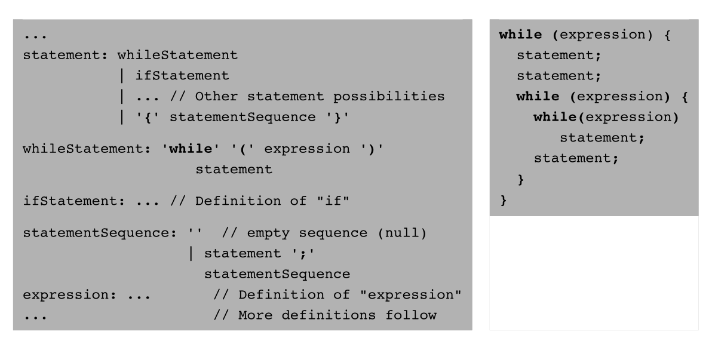
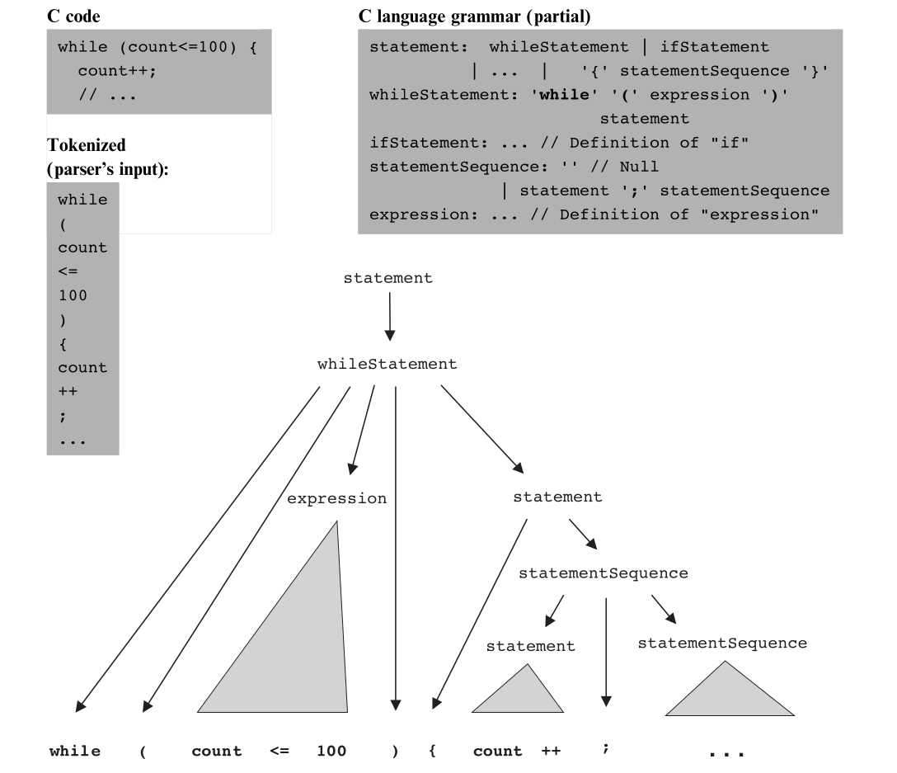

From Tokens to Structure
Grammars, parse trees, and recursive descent.
A Token Stream Is Not Yet a Program
The tokenizer can recognize every token in both sequences. Only one follows the language's structural rules.
let x = x + 1;let = x 1 + ;Parsing determines whether the tokens fit the grammar and identifies the construct formed by each group.
Rules for Building Valid Constructs
A token that appears in the source, such as while, (, or an identifier.
A higher-level construct formed from terminals and other non-terminals, such as an expression or statement.
A set of rules describing how each non-terminal can be formed from simpler elements.
Read a Grammar in Both Directions

Construct: use the rules to generate a valid program.
Analyze: use the same rules to explain the structure of a given program.
Alternatives, Optional Parts, and Repetition
'while'Terminalappears verbatimexpressionNon-terminalanother grammar rulex | yChoicex or yx?Optionalzero or one xx*Repetitionzero or more xwhileStatement: 'while' '(' expression ')' '{' statements '}'Use the Grammar as a Checklist
returnStatement: 'return' expression? ';'Which sequences match this rule?
return;validreturn x;validreturn xinvalid: missing ;return x y;invalid unless x y forms one expressionThe Result Is Hierarchical
Matching the token stream against nested grammar rules uncovers a hierarchy called a parse tree or derivation tree.
while(expression)statementNon-terminals are internal nodes. Tokens are the terminal leaves.
Next: See the complete tree for a nested statement.
One Program, Many Nested Constructs

Sketch a Small Parse Tree
letStatement: 'let' identifier '=' expression ';'
expression: term (op term)*
term: identifier | integerConstant
op: '+' | '-'Sketch the tree for let x = y + 2;. Which nodes are non-terminals?
letStatement contains an expression; that expression contains two term nodes separated by the terminal +.Turn Every Grammar Rule into a Routine
statement→compileStatement()whileStatement→compileWhile()expression→compileExpression()term→compileTerm()When a rule contains a non-terminal, its routine calls the routine for that non-terminal. The call structure mirrors the parse tree.
Tracing a While Statement
while (count < 100) { let count = count + 1; }compileWhile()consumeswhileand(.- It calls
compileExpression()forcount < 100. - It consumes
)and{. - It calls
compileStatements(), which callscompileLet(). - Finally, it consumes the closing
}.
The Current Token Usually Decides
let→compileLet()if→compileIf()while→compileWhile()do→compileDo()return→compileReturn()Jack was designed so that the first token usually identifies the alternative. Parsing a term that begins with an identifier requires one-token lookahead.
When Is Lookahead Necessary?
An identifier can begin several kinds of term. What does the next token reveal?
scorevariableitems [array entrydraw (subroutine callScreen .qualified subroutine callA Failed Expectation Reveals the Error
while (x < 10 { let x = x + 1; }After compiling the expression, the grammar requires ). The parser sees { instead.
The same grammar that recognizes valid programs helps identify invalid ones.
Parsing Explains How the Tokens Fit Together
Defines valid constructions from terminals and non-terminals.
Records the hierarchical derivation of one program.
Implements each grammar rule as a mutually recursive routine.
Building the Jack Syntax Analyzer
From the Jack grammar to structured XML.
Go to Lecture 30